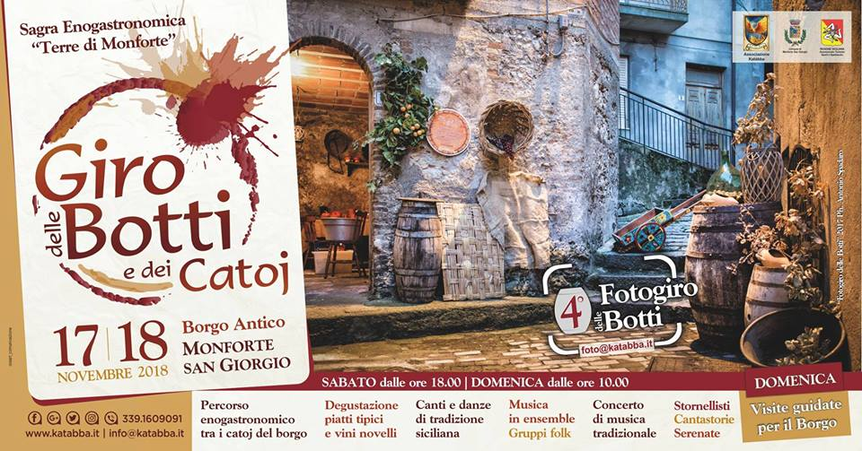

Benvenuti al Giro delle Botti e dei Catoj

Unisciti a noi il 16 e 17 Novembre 2024 per due giorni di degustazioni, musica e divertimento tra le antiche vie del nostro splendido paesino.
Date e Orari Principali:
🗓️ 16 e 17 Novembre 2024
🕒 Dalle 17:00 alle 24:00
Scopri di più Compra i bigliettiInformazioni sulla Sagra

Storia della Sagra
Il Giro delle Botti e dei Catoj diventato ormai un'appuntamento annuale, nasce nell'anno 2009, quando un gruppo di amici si sono impegnati a far rivivere una delle tradizioni più importanti del paese. La manifestazione è un'evento enogastronomico ormai di carattere regionale, dove tramite il percorso accuratamente scelto fa scoprire oltre ai sapori, anche gli scorci del piccolo paesino di Monforte San Giorgio.
Descrizione del Paesino
Monforte San Giorgio è un affascinante borgo medievale immerso nelle colline dei monti Peloritani, situato a 260 metri sopra il livello del mare, è avvolto da due torrenti che scorrono intorno al piccolo colle dove è situato il paesino. In cima alla collina dove sorge la chiesa dell'Immacolata, vi era un'antico castello medievale del quale ormai rimangono solo alcuni pezzi della cinta muraria, e ai piedi della stessa si vede dislocato il piccolo borgo di Monforte San Giorgio. A questo comune fanno parte anche la frazione di Pellegrino situata a 3,5 Km in direzione della montagna e la frazione di Monforte Marina situata a 9 Km verso la sponda Tirrenica. Il centro di Monforte è conformato da piccole viuzze che si intersecano tra di loro per arrivare alla piazza centrale dove sorge l'antica Chiesa Madre dediacata a San Giorgio Martire. Le attività primarie della vita paesana ormai è svolta soltatno da piccole bottegucce e da qualche attività artigianale, mentre in passato era famosa per l'attività agricola, artigianale e edile. Nonostante il cedere il passo allo sviluppo imprenditoriale e alla vita frenetica odierna le associazioni presenti nel piccolo borgo continuano a far rivivere le vecchie tradizioni durante tutto l'anno, organizzando delle manifestazioni sia di carattere religioso che culturale e gastronomico, facendo si che i visitatori che gradiscono conscere il borgo abbiano la possibilitò di conoscere la realtà di Monforte.
Dettagli Unici
La Sagra denominata Giro delle Botti e dei Catoj, organizzata dall'associazione "Katabba mille anni di storia", è una meta fissa per i visitatori che intendono passare una serata spensierata il fine settimana succesivo al San Martino. La parola "Giro delle Botti e dei Catoj" nasce appunto dalla volontà di voler far conoscere la bellezza dei Catoj presenti nel piccolo borgo, i quali anticamente non erano altro che abitazioni scavate nella roccia dove gli abitanti svolgevano la vita giornaliera, poi diventati piccole "cantine" o "ripostigli" in quanto le case si sono sviluppate in verticale costruendo isolai e i Catoj rimasti ottimi posti dove conservare le risefve alimnetari quali vino, formaggio, pomodori e tanto altro in un luogo fresco e a temperatura constante in modo che la conservazione possa durare il più a lungo possibile, da ciò nasce la volontà di far visitare le "Botti" presenti nei Catoj dove per l'occasione negli stessi vengono distribuite pietanze tradizionali della storia culinaria monfortese. I Catoj dislocati lungo un percorso tracciato dall'organizzazione in modo che si possano assaggiare sapori di pietanze diverse e allietati dal suono di gruppi musicali che accompgnano la serata in spensieratezza. A rendere particolare anche la manifestazione è il calice con la relativa sacca portacalici che i ragazzi dell'associazione preparano accuratamente per i visitatori in modo che agli stessi rimanga un ricordo indimenticabile.
Programma dell'Evento
-
Sabato 16 Novembre:
- Ore 17:00: Inaugurazione della sagra e apertura della biglietteria.
- Ore 17:30: Apertura delle cantine e stand gastronomici.
- Ore 18:00: Inizio spettacoli di gruppi musicali, folkloristici, cantastorie, friscaletti siciliani, che allieteranno la permanenza durante tutto il percorso, balli canti e musica dell’antica tradizione popolare siciliana.
-
Domenica 17 Novembre:
- Ore 10:00: Visite accompgnate nel borgo (è gradita la prenotazione).
- Ore 12:00: Pranzo nel percorso.
- Ore 17:00: I Catoj riaprono.
Cantine e Stand Gastronomici

Vieni a scoprire le migliori cantine della regione e i nostri stand gastronomici che offrono una selezione dei più prelibati piatti tradizionali.
-
Cantina Bacco d'Oro
Specialità: Chianti Classico, Vernaccia di San Gimignano
-
Cantina Il Rosso Antico
Specialità: Barolo, Dolcetto d'Alba
-
Stand Gastronomico La Vecchia Cucina
Piatti Tipici: Pappardelle al cinghiale, Ribollita
-
Stand Gastronomico Sapori di Casa
Piatti Tipici: Arancini, Cannoli siciliani
Mappa del Borgo

Orientati facilmente con la nostra mappa interattiva! Scopri le cantine, gli stand gastronomici, i parcheggi e tutti i punti di interesse del borgo di San Vinocchio.
Visualizza la mappa interattivaCome Arrivare
Informazioni su come raggiungere il paesino.
Galleria Fotografica

Rivivi i momenti migliori delle edizioni passate della sagra con la nostra galleria fotografica. Lasciati ispirare dalle immagini del borgo, delle cantine e delle feste trascorse.
Guarda la galleria fotografica